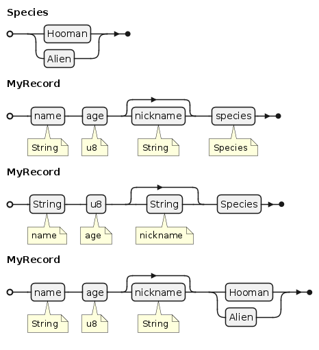
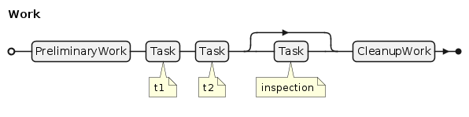
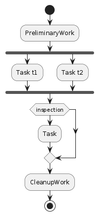
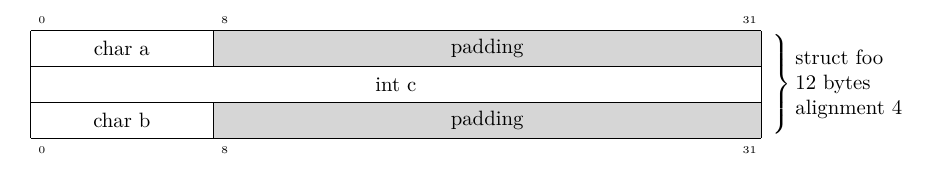
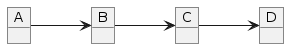

2025-06-05 @equalsraf
Here is a bunch of neat stuff I came across in the past year with diagrams and types. Nothing too special, but altogether I think these are useful ways to represent ideas.
Railroad diagrams are often used to represent grammars (BNF), some people call them syntax diagrams because of this. We can also represent types from a programming language.
Lets consider a couple types in rust (one struct and one enum):
enum Species {
Hooman,
Alien,
}
struct MyRecord {
name: String,
age: u8,
nickname: Option,
species: Species,
} Here are a few variations on how these two types can be turned into the diagram. In the first case I use attribute names as node names and types as annotations, while in the second case I do the reverse.
The enum is represented as a fork in the road (one of two options you can choose). The Option type is a special case of an enum represented as a path around. Vec is missing but can be represented as a loop back.
A special note for function types. They are not represented in any special way. I just put their type in the label (e.g. like the u8 earlier).
While the previous case is useful to represent structure and order. Some times my types represent work to be done i.e. types map to some activity and I would like to represent parallel work:
struct ParallelWork {
t1: Task,
t2: Task,
}
struct Work {
prep: PreliminaryWork,
parallel_steps: ParallelWork,
inspection: Option,
cleanup: CleanupWork,
} As a railroad this would look like this:
which is not wrong but does not encode what I want to emphasize here. Railroad diagrams cannot represent parallel work though, instead I will use an activity diagram for this one.
The tricky part here is the fork. Our generator needs some special rules to know that ParallelWork is special and its members are represented as parallel tasks, instead of a sequence of activities.
The Option type is represented as an optional path (an if statement).
Now if we remove the special fork rules, the activity diagram is a superset of the railroad diagram. But I think the rail diagram is pretier when it works.
I often have to deal with network packets. It is not unusual for me to spend time in wireshark staring at bytes, or writing tests by generating packets with scapy or parsing packets and validating them.
Historically there have been lots of tools for this. Latex has the bytefield package. In python you packetdiag (see nwdiag/blockdiag).
I should note that wireshark has really nice support to render packet diagrams. So instead of staring at an hex dump you can stare at boxes. If your protocol is not supported you can write a dissector in C or lua and them wireshark will draw digrams for your protocols too.
Scapy has a similar set of features where it can save a packet diagram (plus hexdump) as pdf. Which is a really nice thing to do when your tests fail. Just like wireshark you can extend scapy to support your protocols too.
You can turn types into a packet diagram too. Very useful when you need to represent memory layout for data structures. But you need some heavy handed tools to get the right size/alignment. e.g. from the GCC manual examples in 15.5
struct foo {
char a;
int c;
char b;
};Gets turned into this drawing, which shows the padding inside the struct.
Function types are weird. I don't find them that useful in diagrams. A function type maps an argument type to a return type, but displaying this in railroad or activity diagram is not very useful.
The closest type of diagram I can think of is the use of association/aggregation in UML. But it is hard to correctly determine the type of relation in most type systems. e.g. in Rust if the return type is a reference we could infer it is an aggregation/composition but generalizing this for other types seems hard. And in other languages the type system just lacks the information.
Of course we can punt the problem and just represent everything as an association e.g. for this function
fn f2(a: A, b: B, c: C) -> D { ... }we get something like this diagram:
I'm not too fond of this, since it is not more meaningful than the function signature.
I should note that it is hard to have general purpose solutions using these. Implementing a generator that takes a type or a packet and prints a diagram is not too hard. But having display exactly what we want requires either lots of parameters or type annotations.
For example in your railroad do you want to expand all types or not. Or in the packet do your really want to render all fields, do you need to draw some bit values too?
The examples here were created with plantuml, except for the struct one which was done in latex with bytefields.